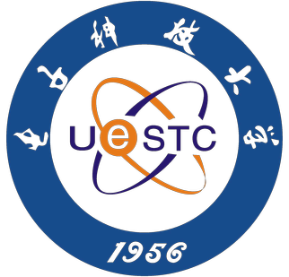

Manyuan Zhang 张满园
I am a Staff Researcher at Meituan-M17 (北斗计划), Hong Kong, working on the LongCat series of foundation models. I am currently focused on physical intelligence, including vision-language-action models and world action models.
I received my Ph.D. from MMLab at the Chinese University of Hong Kong, advised by Hongsheng Li and Xiaogang Wang. Previously, I was a researcher at SenseTime. During my six years there, we built the world's best face recognition model at the time, winning the NIST FRVT and ICCV Masked Face Recognition challenges, and the world's best video recognition model, which won the Kinetics-700 track of the ActivityNet Challenge. We also completed exciting projects including DI-star, DI-drive, and SenseMirage.
News
- Two papers accepted to EMNLP 2026!
- Two papers accepted to ECCV 2026!
- Four papers accepted to ICML 2026! (1 Spotlight)
- Two papers accepted to ACL 2026!
- Five papers accepted to CVPR 2026!
- One paper accepted to 3DV 2026 with Best Paper Award Nomination!
Earlier news
- Two papers accepted to ICLR 2026.
- One paper accepted to EMNLP 2025.
- One paper accepted to ICCV 2025.
- I successfully defended my PhD thesis and officially became Dr. Zhang!
- One paper accepted to CVPR 2025.
- Two papers accepted to ECCV2024.
- One paper accepted to SIGGRAPH2024.
- Two paper accepted to ICCV2023.
- I pass the PhD candidate test.
- I am invited to be a reviewer for NIPS2023 and ICLR2023.
- One paper accepted to CVPR 2023.
- I am invited to be a reviewer for CVPR2023 and ICCV2023.
- One paper accepted to ECCV 2022.
- I am invited to be a reviewer for ECCV2022 and NIPS2022.
- I am invited to ’智东西’ to give a talk about imitation learning in automatic driving.
- We win three championships of ICCV 2021 Masked Face Recognition Challenge on glink360k track, unconstrained track and Webface260M track. Code and solutions will be released very soon.
- We release DI-drive, the decision intelligence platform for autonomous driving simulation. I am responsible for the imitation learning part.
- One paper accepted to ICCV 2021.
- We win the championship of NIST FRVT 1:1.
- We win the championship of NIST FRVT 1:N.
- We win 2 championships of ActivityNet on the Spatio-temporal Action Localization (AVA) track and the Trimmed Activity Recognition (Kinetics 700) track.
- One paper accepted to ECCV 2020.
- We release the X-Temporal for easily implement SOTA video understanding methods with PyTorch on multiple machines and GPUs.
- One paper accepted to ICCV 2019 LFR workshop.
- We win the championship of ICCV19 Multi-Moments in Time (MIT) Challenge.
- We win the championship of ICCV19 Lightweight Face Recognition Challenge.
Tech Report & Projects
Research
Google ScholarI work on multimodal understanding and generation, from foundation models to reasoning and interaction with the physical world.
Gen-Searcher: Reinforcing Agentic Search for Image Generation
Preprint · 2026
Search-grounded image generation with agentic reasoning.
Stable-MM-R1: Anchoring Multimodal Reasoning Dynamics via Entropy-Guided Stratification
EMNLP · 2026
Think with 3D: Geometric Imagination Grounded Spatial Reasoning from Limited Views
CVPR · 2026
Grounding spatial reasoning in 3D geometric imagination.
OneThinker: All-in-one Reasoning Model for Image and Video
CVPR · 2026
Unified reasoning across image and video understanding.
CodePlot-CoT: Mathematical Visual Reasoning by Thinking with Code-driven Images
CVPR Findings · 2026
Holi-Spatial: Evolving Video Streams into Holistic 3D Spatial Intelligence
ICML · 2026Spotlight
CTR3D: Cross-view Token Reduction for Dense Multi-view Generation
3DV · 2026Best Paper Award Nomination
EditThinker: Unlocking Iterative Reasoning for Any Image Editor
Preprint · 2025
Iterative reasoning and refinement for image editing.
Motion-I2V: Consistent and Controllable Image-to-Video Generation with Explicit Motion Modeling
SIGGRAPH · 2024
Controllable image-to-video generation with explicit motion.
Decoupled DETR: Spatially Disentangling Localization and Classification for Improved End-to-End Object Detection
ICCV · 2023
Disentangling localization and classification in object detection.
Large-scale Masked Face Recognition
Technical report · 2021Top-1 solution
1st place solution for AVA-Kinetics Crossover in ActivityNet Challenge 2020
Technical report · 2020Top-1 solution
Experience
- 2025 – present
- Meituan-M17, Hong KongStaff Researcher · LongCat foundation models
- 2019 – 2025
- SenseTime ResearchResearcher / Research Intern · Face recognition, video understanding, and visual generation
- 2018 – 2019
- Megvii ResearchResearch Intern · Style transfer with Shuaicheng Liu
- 2018
- ByteDance AI LabResearch Intern · Large-scale face recognition
More about my earlier work
During six years at SenseTime, I worked on face recognition systems that won the NIST FRVT and ICCV Masked Face Recognition challenges, and video recognition models that won the ActivityNet Kinetics-700 challenge. I worked with Yu Liu and Guanglu Song.
I also helped build DI-star for StarCraft II, worked on reinforcement learning and imitation learning for autonomous driving in DI-drive, and contributed to the text-to-image product SenseMirage.
Education
- 2021 – 2025
- The Chinese University of Hong KongPh.D. · Multimedia Laboratory (MMLab)
- 2015 – 2019
- University of Electronic Science and Technology of ChinaB.Eng. · Network Engineering

Challenge awards
- Won the 1st place in CVPR21 Masked Face Recognition Challenge (WebFace260M, InsightFace Unconstrained and InsightFace glint360k track)
- Won the 1st place in CVPR20 ActivityNet Challenge (Kinetics700 track and AVA track)
- Won the 1st place in NIST FRVT held by US government (1:1 Verification and 1:N Identification)
- Won the 1st place in ICCV19 Multi-Moments in Time (MIT) Challenge
- Won the 1st place in ICCV19 Lightweight Face Recognition Challenge